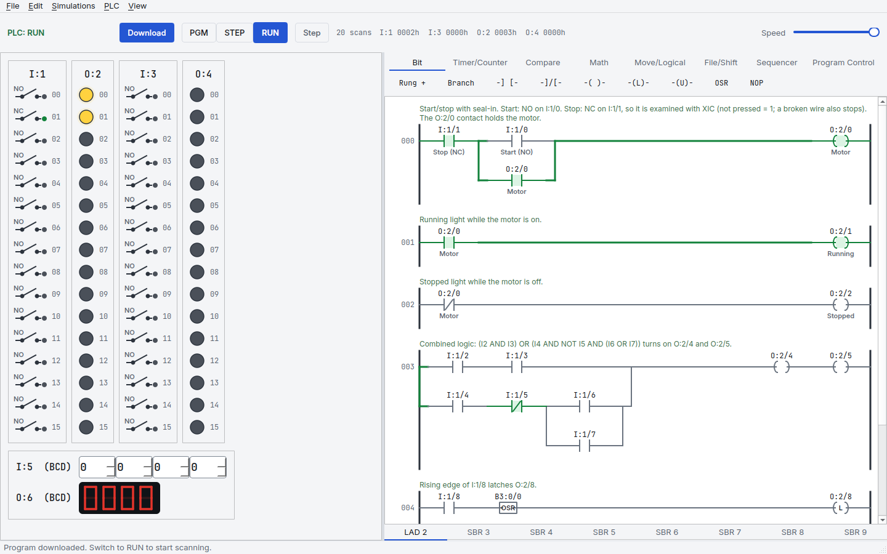
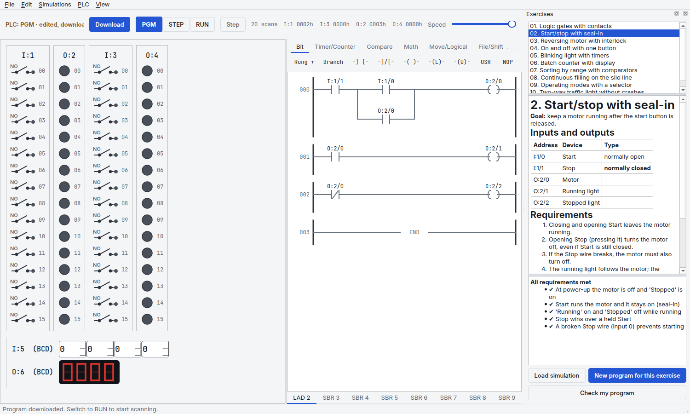
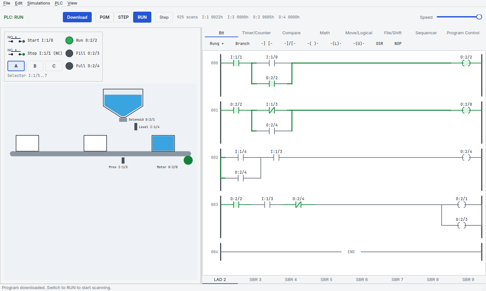
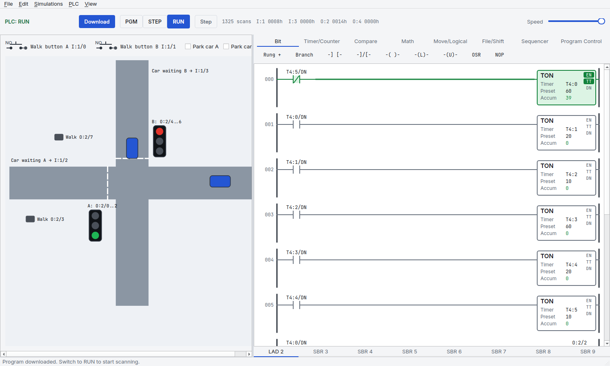

Learn PLC programming.
Get told what's wrong.
A free, open-source PLC trainer. Write ladder logic, run it on simulated machines, and see which requirement your program misses, without a teacher.
Download on GitHub How to install
Learning alone, you only find out when it fails
No one to check your work
A program can look right and still miss the case that matters: Stop held with Start, a broken wire, a box that overfills.
Trainers that fight your computer
Many run only on Windows, need a licence key, and draw badly on modern high-resolution screens.
How it works
1 Write. Click an instruction, type its address, or drag it where you want. Mistakes are caught before you run.
2 Run. Download, switch to RUN and flip the switches. Energized paths turn green; timers and counters count live.
3 Check. Open an exercise and press Check my program. Every requirement shows ✔ or ✘ with the reason.

Features
Check my program
13 exercises, from logic gates to tuning a PID level loop, each checked automatically, faster than real time.
Runs everywhere
Linux, macOS and Windows, sharp on any screen. No licence key, no trial.
Mistakes caught early
Unknown tags, wrong types and unset operands are reported with a suggestion.
Machines to drive
I/O panel with thumbwheels and a BCD display, a filling line, a road crossing and an analog tank with a live trend.
Ladder and structured text
Timers, counters, compare, math, arrays, sequencers, PID, routines, functions and function blocks, in two notations: mnemonics or IEC.
Real scan behaviour
Prescan, first-pass bit, outputs off in program mode, rung order, major faults with codes.


Install
Python 3.11 or newer.
git clone https://github.com/juliordzcer/plcyard.git cd plcyard python3 -m venv .venv .venv/bin/pip install -e . .venv/bin/plcyard
On Windows use .venv\Scripts\pip and .venv\Scripts\plcyard.
FAQ
Is it really free?
Yes. PLCYard is open source under GPL-3.0: use it, share it, change it. Changed versions you distribute stay open too.
Is it the same as a real PLC?
It follows the instruction behaviour and scan rules of industrial PLCs closely, and you can write it in the two common notations (mnemonics or IEC symbols), so what you learn carries over. It does not talk to real hardware yet and is not a replacement for vendor software.
Function blocks? Structured text?
Ladder and structured text today, with functions and function blocks. Function block diagram is next on the roadmap.
Can I open my .rsl files?
Yes, plain-text .rsl ladder files open and are converted to the PLC's tags and arrays.
Can I add exercises or simulations?
Exercises are Markdown files with a reference solution and checks. Open an issue on GitHub with your idea.